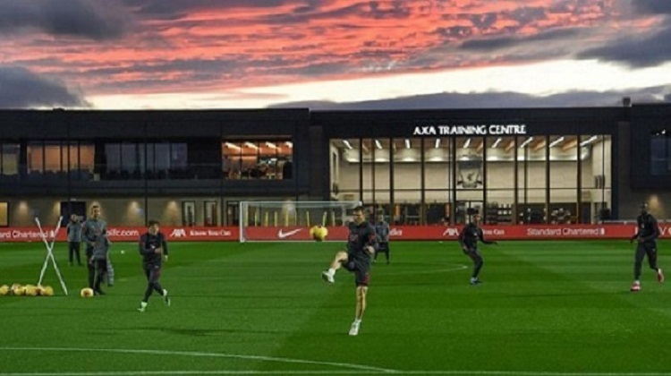
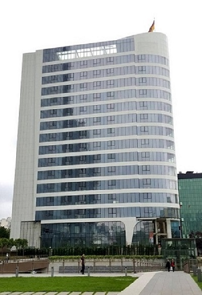

Metal-İş Futbol Kulübü, 3 Haziran 2014 tarihinde kuruldu.
Kulübümüz 3 ortaklı bir sermaye şirketi olup, kurucu Başkanı Eray Altunöz’dür.
Futbol Takımımız, Süper Lig’deki ilk yılında 2014-2015 sezonunu 4. sırada bitirerek Avrupa Ligi için ön eleme
oynama hakkını kazandı.
2015-2016 sezonu başında AZ Alkmaar’a elenerek Avrupa kupalarına havlu atan ekibimiz, sezon sonunda yine ligi 4.
sırada tamamladı.
2016-2017 sezonu başında Avrupa Ligi ön elemelerinde Rijeka’yı eleyen takımımız,
Ukrayna temsilcisi Shakhtar Donetsk’e elenerek gruplara kalma şansını yitirdi.
Kuruluşunun henüz 3. yılında sezonu 2. sırada bitirme başarısı gösteren Metal-İş Futbol Kulübü,
sonraki sezon Şampiyonlar Ligi ön elemesinde Club Brugge’ü saf dışı bırakırken play-off turunda İspanyol devi
Sevilla’ya elenerek Avrupa Ligi gruplarından yoluna devam etti.
C Grubu’nda yer alan takımımız, 6 maçta 8 puan alarak grubu 3. sırada bitirdi.
Süper Lig’de 2017-2018 sezonunu 3. sırada tamamladıktan sonra Avrupa Ligi ön elemesinde İngiliz temsilcisi
Burnley’e elenen ekibimiz,
2018-2019 sezonu sonunda ligdeki puan tablosunda bir kez daha 2. sırada yer aldı.


2019-2020 sezonu öncesi “Yeni vizyon, aynı hedef” sloganıyla yola çıkan kulübümüz,
Şampiyonlar Ligi play-off turunda Olimpiakos’a elendikten sonra yoluna Avrupa Ligi’nde devam etti.
İtalyan devi Roma, Almanya’nın köklü kulüplerinden Borussia Mönchengladbach ve Avusturya temsilcisi
Wolfsberger ile birlikte yer aldığı J Grubu’nu lider tamamlayan ekibimiz,
son 32 turunda Portekiz takımı Sporting CP’yi saf dışı bırakırken son 16 turunda Kopenhag’a elendi.
Metal-İş Futbol Kulübü, Süper Lig’de ise kulüp tarihinin 6. sezonunda Süper Lig tarihinin 6. şampiyonu oldu.
“Türkiye’nin yeni şampiyonu” sloganıyla yoluna devam eden kulübümüz, 2020-2021 sezonunda Şampiyonlar Ligi’nde
Manchester United,
Paris Saint Germain ve Leipzig gibi Avrupa futbolunun dev kulüpleriyle aynı grupta yer almaktadır.